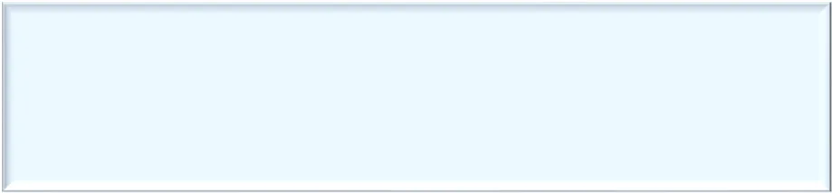
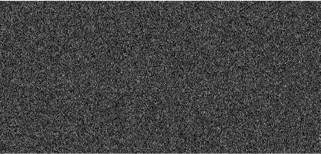
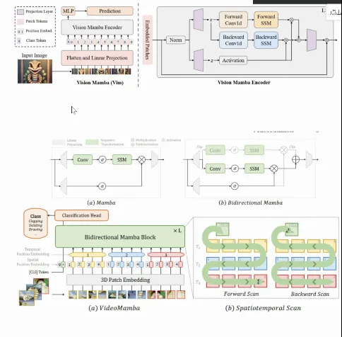
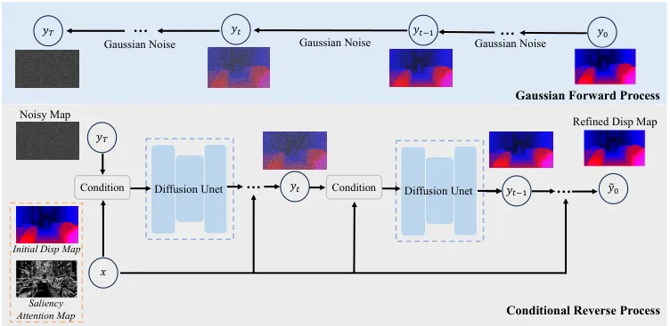
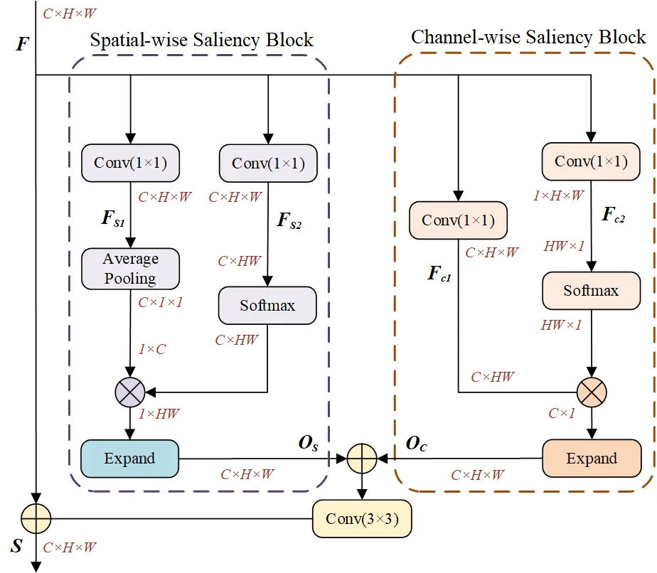

StereoDiffuer：带显著性注意感知的扩散式渐进几何建模双目匹配StereoDiffuer: Diffusion-based Progressive Geometry Modeling with Saliency Attention Perception for Stereo Matching
直接作用于底层几何，但当前证据主要来自 Scene Flow 与 KITTI，系统级可靠性仍需进一步验证。
一句话工作总结
改善底层双目几何质量，为稠密深度和后续 3D/4D 表征提供更细致的输入。
摘要
StereoDiffuer 用显著性模块提取边界、细结构和锐利边缘，以初始视差和置信度特征条件化迭代去噪，修正代价体正则化和上采样造成的细节损失。
With the advance of deep neural networks, the quality of disparity maps obtained through stereo matching has steadily improved. However, existing stereo matching methods still struggle to preserve fine-grained geometric details, resulting in blurred edges and over-smoothed predictions in challenging regions. To address these limitations, we propose StereoDiffuer, an iterative diffusion-based stereo matching framework that explicitly models geometric details and progressively refines disparity estimates. The framework incorporates a Saliency Attention Perception (SAP) module to extract salient geometric cues, including object boundaries, thin structures, and sharp edges. Confidence-guided SAP features are combined with the initial disparity estimate to condition an iterative denoising diffusion process, which corrects residual disparity errors and restores geometric details suppressed during cost-volume regularization and upsampling. Experimental results on the Scene Flow and KITTI benchmarks demonstrate the effectiveness of the proposed framework and its competitive performance relative to the compared stereo matching methods.
图表/页面预览
{kind=link}


{kind=link}

{kind=link}

{kind=link}

{kind=link}
